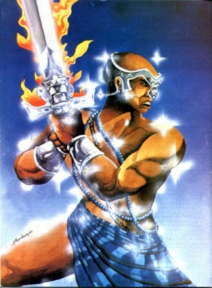

Ogum
Ogum e Sango nunca se reconciliaram e, vez por outra, se degladiavam nas mais absurdas disputas. Certa vez Ogum propôs a Sango que dessem uma trégua em suas lutas, pelo menos até a próxima lua que chegaria. Sango fez alguns gracejos ao quais Ogum revidou, mas decidiram por uma aposta, continuando assim a disputa. Ogum propôs que ambos fossem à praia e recolhessem o maior número de búzios que conseguissem e quem vencesse daria ao perdedor o fruto da coleta. Deixando Sango, Ogum seguiu para a casa de Oiá e solicitou-lhe que pedisse à Ikú (a morte) que fosse à praia no horário em que ele havia combinado com Sango. Oiá exigiu uma quantia em ouro, o que prontamente recebeu de Ogum. Na manhã seguinte, Ogum e Sango se apresentaram na praia, iniciando a disputa. Vez por outra se entreolhavam e Sango cantarolava sotaques jocosos contra Ogum. O que Sango não percebeu é que Ikú havia se aproximado dele. Sango levantou os olhos e se deparou com Ikú que riu de seu espanto. Sango largou sua sacola com os búzios colhidos e desesperado se escondeu de Ikú. À noite Ogum procurou Sango mostrando seu espólio. Sango, envergonhado, abaixou a cabeça e entregou ao guerreiro o fruto de sua coleta".
Quando, depois de muitos anos de guerras, Ogun voltou ao reino de Irê, por infelicidade celebrava-se uma cerimônia na qual todos deviam guardar o mais rigoroso silêncio. Vinha cansado, com fome e com sede, e achou que o silêncio de todos era uma falta de respeito. Ogun, cuja paciência é muito curta, enfureceu-se e, com a espada, começou a cortar cabeças e quebrar tudo. Terminada a obrigação de silêncio, seu filho apareceu, oferecendo-lhe suas comidas prediletas, cães e caramujos, feijão regados com azeite de dendê e potes de vinho de palma. Ogun, satisfeito e calmo, lamentou seus atos de violência e declarou que já vivera o bastante. Baixou a ponta do sabre em direção ao chão e desapareceu pela terra a dentro, transformando-se em Orisá. Ògún lutava sem cessar contra os reinos vizinhos. Ele trazia sempre um rico espôlio de suas expedições, além de numerosos escravos. Todos estes bens conquistados, ele entregava a Odùduá, seu pai, rei de Ifé. Ògún continuou suas guerras. Durante uma delas, ele tomou Irê. Antigamente, esta cidade era formada por sete aldeias. Por isto chamam-no, ainda hoje, Ògún mejejê lodê Irê - "Ògún das sete partes de Irê". Ògún matou o rei, Onirê e o substituiu pelo próprio filho, conservando para si o título de Rei. Ele é saudado como Ògún Onirê! - "Ogum Rei de Irê!" Entretanto, ele foi autorizado a usar apenas uma pequena coroa, "akorô". Daí ser chamado, também, de Ògún Alakorô - "Ogum dono da pequena coroa". Após instalar seu filho no trono de Irê, Ògún voltou a guerrear por muitos anos. Quando voltou a Irê, após longa ausência, ele não reconheceu o lugar. Por infelicidade, no dia de sua chegada, celebrava-se uma cerimônia, na qual todo mundo devia guardar silêncio completo. Ògún tinha fome e sede. Ele viu as jarras de vinho de palma, mas não sabia que elas estavam vazias. O silêncio geral pareceu-lhe sinal de desprezo. Ògún, cuja paciência é curta, encolerizou-se. Quebrou as jarras com golpes de espada e cortou a cabeça das pessoas. A cerimônia tendo acabado, apareceu, finalmente, o filho de Ògún e ofereceu-lhe seus pratos prediletos: caracóis e feijão, regados com dendê, tudo acompanhado de muito vinho de palma. Ògún, arrependido e calmo, lamentou seus atos de violência, e disse que já vivera bastante, que viera agora o tempo de repousar. Ele baixou, então, sua espada e desapareceu sob a terra. Ògún tornara-se um òrìsà.
Notícias...
----------------------------------
Copyright © 2011- Todos direitos reservados à ACCAIA
Rua Arildo Jose da Silva,99 - Itinga Joinville - SC - Cep: 89245000
::: Suporte 04791261971 :::